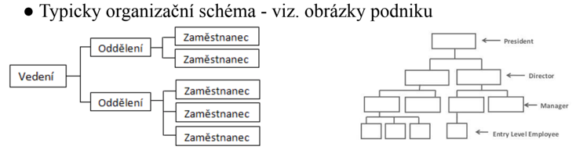
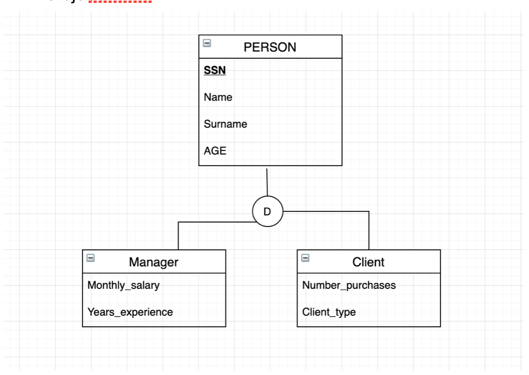

Relacni-modely-hierarchickych-struktur
Otázky
popiš hierarchický model
co je tu supertype
co je to subtype
Hierarchický model
v hierarchickém datovém modelu jsou data organizovány do stormových struktur
hierarchie se v relační DB může řešit pomocí rekurze --> self-reference
Hieararchie != rekurze
vždy musí být jeden elemnent ROOT
element může mít pod sebou nekonečné množství dalších elemtů, ale nad sebou jen jeden

Supertype - subtype
podobné dědičnosti --> supertyp = parent; subtype = child
Využití
pokud mají 2 objekty několik vlastaností stejných atributů/vztahů použijeme supertype a subtype
Supertype
parent entita
např. Produkt
Subtype
child entita
dědí všechny atributy a vztahy od supertypu
odkazuje na Supertype entitu a právě tento samotný Fk odkaz je i jejich PK
např. Elektro, které má vše co produkt a ještě elektrickou spotřebu
např. Potraviny, kterí mají vše co má produkt a ještě datum spotřeby
Pravidla supertype-subtype
Můžeme si sami definovat jestli chceme aby supertype mohl nebo nemohl mít více jak jednu subtype entitu
Exkluzivní --> Supertype má pouze jednu Subtype instanci
Non-exkluzivní --> Supertype může mít několik Subtype instancí (dafault)

Sum-up
Hierarchický model--> stromová struktura, jeden root. Parent může mít několik potomků, ale jen jednoho parenta
Supertype --> parent entita
Subtype --> child entita. Dědí všechny atributy superypu
Exkluzivní --> jen jeden subtype na supertype
Non-exkluzivní --> několik subtypu na supertype